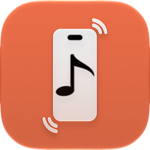

תמיכה
Ringo: יוצר צלצולים
שאלות נפוצות
איך מגדירים צלצול?
בוחרים קובץ, חותכים את הקטע הרצוי ולוחצים "ייצוא ושיתוף". בתפריט השיתוף בוחרים "שימוש כצלצול", וההגדרות של האייפון נפתחות כשהצלצול החדש כבר מסומן.
לא רואים "שימוש כצלצול" בתפריט השיתוף
האפשרות קיימת מ-iOS 26 ואילך. אם היא לא מופיעה בשורה הראשונה, גוללים בתפריט או לוחצים "עוד". ודאו שהאייפון מעודכן לגרסה האחרונה.
איך מגדירים צלצול לאיש קשר מסוים?
קודם מגדירים את הצלצול דרך האפליקציה. אחר כך: אנשי קשר ← בוחרים איש קשר ← עריכה ← צלצול, ובוחרים את הצלצול מהרשימה.
למה הצלצול מוגבל ל-29 שניות?
האייפון מקבל צלצולים של עד 30 שניות. ההגבלה ל-29 שניות מבטיחה שהצלצול לא יידחה בגלל שבריר שנייה.
אילו קבצים אפשר להשתמש בהם?
כמעט כל קובץ שמע או וידאו: MP3, M4A, WAV, FLAC, הודעות קוליות מוואטסאפ, סרטונים מהגלריה ופורמטים פחות נפוצים כמו OGG, WMA ו-MKV. שירים מוגנים, למשל מ-Apple Music, לא ניתנים לעריכה.
איך יוצרים צלצול מהודעה קולית בוואטסאפ?
בצ'אט, לחיצה ארוכה על ההודעה הקולית ← העבר ← כפתור השיתוף ← Ringo. האפליקציה נפתחת ישר על מסך החיתוך.
כמה צלצולים אפשר ליצור בחינם?
3 צלצולים בחינם. אחר כך אפשר לרכוש "פתיחה מלאה" ברכישה חד-פעמית, בלי מנוי. שיתוף חוזר של צלצול שכבר בספרייה תמיד חינם.
החלפתי אייפון או התקנתי מחדש. איך מחזירים את הרכישה?
באפליקציה: הגדרות ← שחזור רכישה. ודאו שאתם מחוברים לאותו חשבון Apple שבו בוצעה הרכישה.
איפה נשמרים הצלצולים?
רק על האייפון שלכם, בלשונית "הצלצולים שלי". שום דבר לא נשלח לשרת. פרטים נוספים במדיניות הפרטיות.
Support
Ringo: Ringtone Maker
Frequently asked questions
How do I set a ringtone?
Pick a file, trim the part you want and tap "Export & Share". In the share sheet choose "Use as Ringtone", and your iPhone's settings open with the new ringtone already selected.
I don't see "Use as Ringtone" in the share sheet
This option is available on iOS 26 and later. If it isn't in the first row, scroll the menu or tap "More". Make sure your iPhone is up to date.
How do I set a ringtone for a specific contact?
First set up the ringtone through the app. Then open Contacts › choose a contact › Edit › Ringtone, and pick it from the list.
Why are ringtones limited to 29 seconds?
iPhone accepts ringtones of up to 30 seconds. Keeping it to 29 seconds makes sure a ringtone is never rejected over a fraction of a second.
Which files can I use?
Almost any audio or video file: MP3, M4A, WAV, FLAC, WhatsApp voice messages, videos from your photo library, and less common formats like OGG, WMA and MKV. Protected songs, such as from Apple Music, can't be edited.
How do I make a ringtone from a WhatsApp voice message?
In the chat, touch and hold the voice message › Forward › the share button › Ringo. The app opens straight to the trim screen.
How many ringtones can I make for free?
3 ringtones for free. After that, you can buy "Full Unlock" as a one-time purchase, with no subscription. Sharing a ringtone again from your library is always free.
I got a new iPhone or reinstalled the app. How do I get my purchase back?
In the app: Settings › Restore Purchase. Make sure you're signed in with the same Apple Account you used to buy it.
Where are my ringtones stored?
Only on your iPhone, in the "My Ringtones" tab. Nothing is sent to a server. More details in the privacy policy.